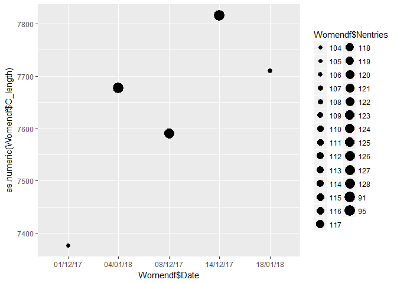
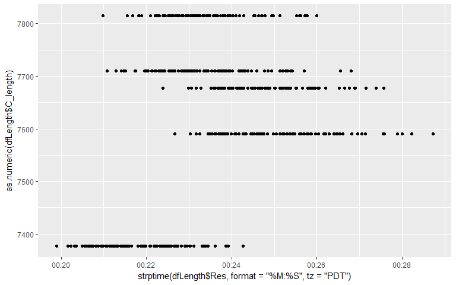
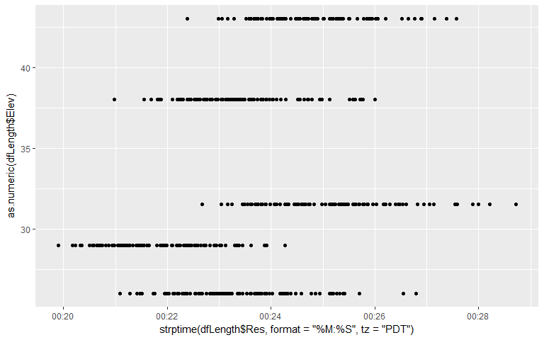
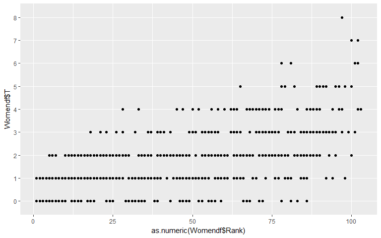
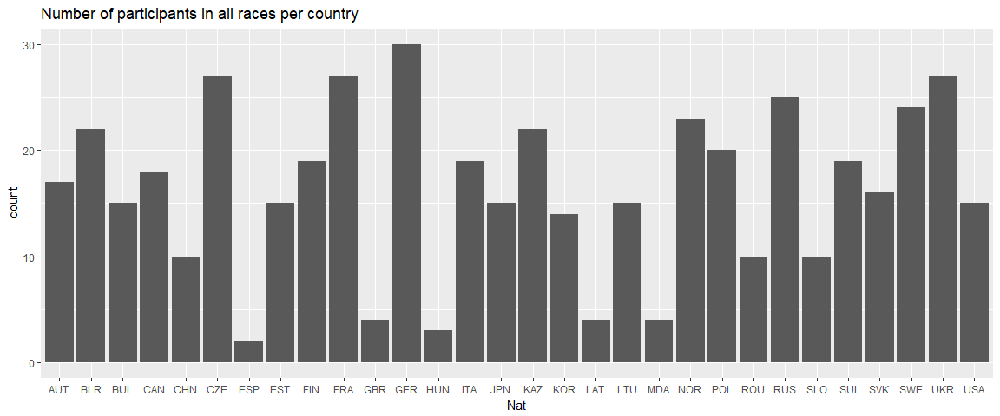
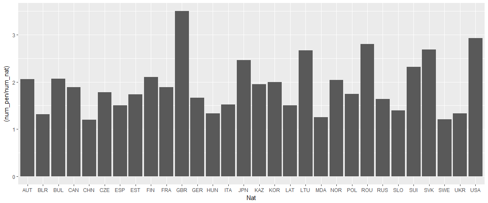

The 2018 Winter Olympics finally kicked off! In honor of this, I asked a friend of mine who loves sports what data he would be interested in seeing in the sports that are in the winter Olympics and he answered “biathlon.” I found a website that collects lots of data on the sport called biathlonresults.com. I was really looking forward to the olympics this year, and France has a very famous biathlete, Martin Fourcade, so that makes me keen to look more into this sport. Let’s have a look!
First things first, collecting the data from the website is not that great, they provide pdfs, and all the data from all the different events are separated so there is a lot of data cleaning up involved which I have done previous to any of the code below, but I provide the tables on my github, so you can go ahead and download them to play with it yourself if you want without going through the annoying data cleaning part =) .
First look at the data
| Rank | Bib | Nat | P | S | |
|---|---|---|---|---|---|
| 2 | 1 | 71 | BLR | 0 | 0 |
| 3 | 2 | 69 | SVK | 1 | 0 |
| 4 | 3 | 48 | ITA | 1 | 0 |
| 5 | 4 | 80 | UKR | 0 | 0 |
| 6 | 5 | 97 | NOR | 0 | 0 |
| 7 | 6 | 55 | FIN | 1 | 1 |
| 8 | 7 | 78 | FRA | 0 | 1 |
| 9 | 8 | 31 | GER | 1 | 0 |
| 10 | 9 | 89 | RUS | 0 | 1 |
| 11 | 10 | 102 | FRA | 0 | 2 |
Features of each race

The two plots show some details about the races more visually than the table: the first race on december 1st had the least amount of athletes and was also the smallest course and had the second smallest elevation difference. The race on the 4th of december has average length, average number of athletes but higher elevation difference, same for the race on 8th december except elevation is smaller. The race on 14th december has the longest course, the most athletes and slightly higher elevation. The last race on 18th december has a longer course, lowest elevation difference, and also fewer athletes.
Length of course depending on time

I would expect that there would be a strong correlation between length of the course and time of completion, and for the shortest and the longest it does correlate, however this plot shows that the 2 middle distances had the longest finish times, so maybe it is due to elevation difference on the course, so let’s look at that next.
Result according to elevation difference in the course

The answer however shows that it’s not necessarily the courses with most elevation that get the highest finish times. Let’s now look at the correlation between the number of penalties and the rank in the race.
Rank according to number of penalties

This plot is interesting, it shows that first place ranks are only possible to athletes with maximum 1 penalty. The more penalties are earned, the further the highest possible rank goes down. But on all numbers of penalties, the points are quite spread out, so some really good shooters sometimes cannot keep up with the fastest athletes who have got more penalties. Also a majority of athletes are having only 0-2 penalties.
Number of participants per country

There are 30 different nationalities for 148 different athletes. But the figure is a little big, and I want to separate countries into three groups: one with countries that sent the most athletes into these races, one which sends a medium amount, and one which has very few athletes to compete in this event:
Countries that send many athletes: CZE, FRA, GER, UKR
Countries that send a medium amount of athletes: AUT, BLR, CAN, FIN, ITA, KAZ, NOR, POL, SUI, SVK, SWE
Countries that send few athletes: CHN, ESP, GBR, HUN, KOR, LAT, MDA, ROU, SLO
Number of penalties per country normalized per number of athletes

Looking at the number of penalties, since we just found out that there is huge variability in number of athletes that participate per country s we saw before, I had to normalize the number of penalties per number of athletes in each country, so the plot represents the average number of penalties per athlete in each county. The first thing we notice is that it’s generally not high at all! Again, I want to separate countries into three groups depending on how many penalties they have:
Countries that tend to have more than 3 penalties per athlete: GBR
Countries that have around 2 penalties per athlete: AUT, BUL, FIN, JPN, LTU, NOR, ROU, SUI, SVK, USA
Countries that have less than 2 penalties per athlete: BLR, CAN, CHN, CZE, ESP, EST, FRA, GER, HUN, ITA, KAZ, LAT, MDA, POL, RUS, SLO, SWE, UKR
Are there more errors standing or laying down?
| Prone | Standing | Total |
|---|---|---|
| 395 | 531 | 926 |
The table shows that there are generally more errors standing, which makes sense.
Most successful athletes during the world cup 2017
Let’s look first at the women who have won first place and their times:
| Name | Nat | Res | C_length |
|---|---|---|---|
| HERRMANN Denise | GER | 19:54.8 | 7377 |
| KUZMINA Anastasiya | SVK | 20:59.6 | 7815 |
| ECKHOFF Tiril | NOR | 21:05.3 | 7710 |
| KUZMINA Anastasiya | SVK | 22:23.7 | 7677 |
| DOMRACHEVA Darya | BLR | 22:40.2 | 7590 |
KUZMINA Anastasiya won twice but does not hold the fastest time of all races held by German HERRMAN Denise which was on the shortest course, but she did win on the longest course.
That’s all for today, as usual the code is below and on GitHub, I hope you’re excited for biathlon at the Olympics, see you next time!
Sciathlete
library(readODS)
library(knitr)
library(ggplot2)
library(sqldf)
Womendf <- read.ods("WC_biathlon_women7.5k2017-18.ods", sheet = 1)
colnames(Womendf) <- Womendf[1,]
Womendf <- Womendf[2:nrow(Womendf),]
Womendf$Name <- paste(Womendf$FName, Womendf$LName, sep=" ")
Womendf <- Womendf[,c(1,2,5:16)]
kable(head(Womendf, n=10))
ggplot(Womendf, aes(x=Womendf$Date, y=as.numeric(Womendf$C_length), size=Womendf$Nentries)) + geom_point()
ggplot(Womendf, aes(x=Womendf$Date, y=as.numeric(Womendf$C_length), size=Womendf$Elev)) + geom_point()
dfLength <- Womendf[order(Womendf$Res),]
ggplot(dfLength, aes(x=strptime(dfLength$Res, format="%M:%S", tz="PDT"), y=as.numeric(dfLength$C_length))) + geom_point()
ggplot(dfLength, aes(x=strptime(dfLength$Res, format="%M:%S", tz="PDT"), y=as.numeric(dfLength$Elev))) + geom_point()
ggplot(Womendf, aes(x=as.numeric(Womendf$Rank), y=Womendf$'T')) + geom_point()
ggplot(Womendf, aes(x=Nat)) + geom_bar() + ggtitle("Number of participants in all races per country")
dfnew <- sqldf("SELECT distinct Nat,count(Nat) as num_nat,sum(T) as num_pen FROM Womendf GROUP BY Nat")
ggplot(dfnew, aes(x=Nat)) + geom_col(aes(x=Nat, y=(num_pen/num_nat)))
dfnew$num_pen <- as.numeric(dfnew$num_pen)
dfnew$num_nat<- as.numeric(dfnew$num_nat)
pendf <- sqldf("SELECT sum(P) as Prone,sum(S) as Standing,sum(T) as Total FROM Womendf")
kable(pendf)
successdf <- sqldf("SELECT distinct Name,Nat,Res,C_length FROM Womendf WHERE Rank == 1 ORDER BY Res")
kable(successdf)